Rendered with FFmpeg 7.1 • Hand-Drawn Stroke Animation
CYCLO Café Animated Loading Screen
Custom-crafted line-drawing animation replicating the iconic CYCLO coffee cart logo from scratch. Includes optimized GIF, MP4 video, WebM, and vector SVG.
Format #1 • Recommended
360 × 270 px
Optimized Small GIF 110 KB

Palette Optimization:
2-Pass Palettegen (64 colors)
Framerate:
25 FPS • 3.2s Loop
Compatibility:
Universal (Web, iOS, Android)
assets/image/loading/cyclo-loading.gif
Save
Format #2 • Dark / Overlay Mode
360 × 270 px
Transparent Background GIF 300 KB
Background:
100% Alpha Transparent
Best For:
Modals, overlays, colored themes
Framerate:
25 FPS • 3.2s Loop
cyclo-loading-transparent.gif
Save

Format #3 • Ultra Small File
480 × 360 px
MP4 Video (H.264) 39 KB
Codec:
H.264 (libx264, yuv420p)
Resolution & FPS:
480x360 @ 30 FPS
File Size Efficiency:
Ultra lightweight (39 KB)
assets/image/loading/cyclo-loading.mp4
Save
Format #4 • Infinite Sharpness
Vector / Scalable
Vector SVG (CSS Keyframes) 11 KB

Technology:
Pure SVG + CSS stroke-dashoffset
Resolution:
Infinite (0 pixelation at 4K)
Framerate:
Native Monitor Rate (60/120Hz)
assets/image/loading/cyclo-loading.svg
Save

How It Appears in CYCLO Café UI
Live preview of the loading screen card used in the delivery hub application
កំពុងទាញទិន្នន័យសាខា...
CYCLO Café • Delivery Hub & Branch Finder
Embed Snippets
HTML (GIF Loading)
110 KB
<img
src="assets/image/loading/cyclo-loading.gif"
alt="Loading CYCLO..."
class="w-48 h-auto object-contain"
/>
HTML (MP4 Video Loading)
39 KB
<video autoplay loop muted playsinline
class="w-48 h-auto">
<source src="assets/image/loading/cyclo-loading.mp4" type="video/mp4">
</video>